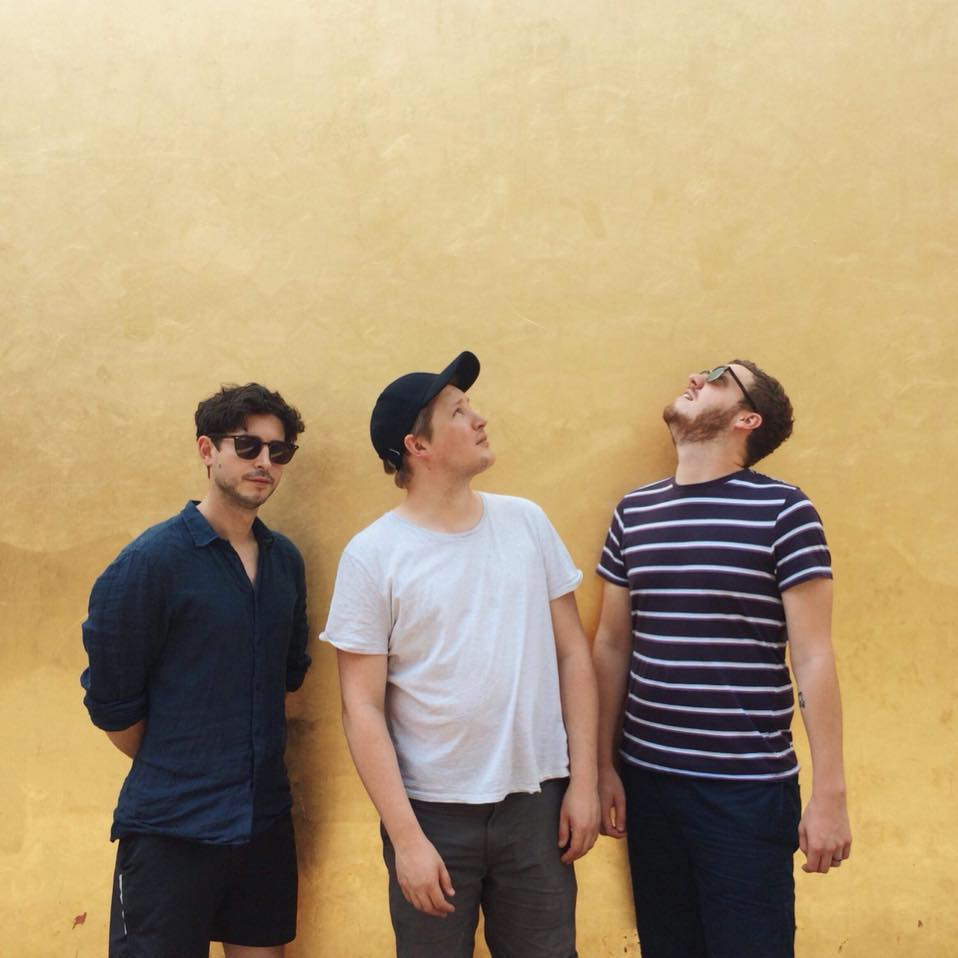

Hello. This is the website for the rock music band Olympians. Here you can find information and words about the rock music band Olympians. The rock music band Olympians have been a band for about 100 years despite almost complete indifference both outside and within the band. They have some music to listen to on Bandcamp and a record for sale here. They have a mailing list which they have been trying to make everybody leave for about 3 years now. You can join it here, but that's hardly the point.
This is a photo of the band taken last year in Milan, which is a nice place.
Here are some videos that somewhat explain how we ended up here, and hopefully, what we're going to do about it.
Daniel and Benjamin made this video in the office they used to work in. It took about 6 years to edit, which you honestly cannot tell from the finished product.
This video was made by our good friend and general champion Marcantonio from the excellent rock music band Dags! We filmed it in DIY Space For London which is a nice place you should visit.
This video was made by our own Michael Parkin. Animation takes a long time apparently, so he had a fairly miserable time making it.
If you haven't listened to the Italian rock music band Dags, then please go and do that now. Assuming you have now done so and are back for more facts, we have toured with them a few times and it was pretty great and they made some nice content about and were kind enough to leave out the bits where we were arguing with one another because we were old and tired of all this shit.
Did a really bad job of pretending we wanted to eat this food here didn't we.
Occasionally we get ideas above our station about being artistic in some fashion other than lumpenly throwing together our songs, and this well meaning but ultimately meaningless trailer for our album is an excellent example of this.
This is like the video above, but for the EP before that, and again is somewhat pointless.
One time Beatcast had a good band pull out of a session last minute so asked us to take their place. Here we met Thomas Le Beau Morley whose home we ruined with riffs for the following 3 years, and were so taken with the park it was filmed in that Dan moved from Norwich to London just to be down the road from it.
Also from the same session, don't have anything else to say but feel I should type something here so as not to ruin the visual shape of this internet web page.
Benjamin Thompson has a really nice sideline in tiny folk-esque songs about sandwiches he has enjoyed and notable trips to the beach etc. This is one of those songs which was going to go on the Adventure Gun EP but then didn't, probably because it wasn't stupid and Age of Adz enough for that time period.
We made this video with our friends David and Ian Drake in the now-defunct Stew Gallery in Norwich. The absolutely horrible colour effect was achieved by aiming two terrible family video cameras at the wall, putting them on 'inverse' mode and playing them back through two projectors. Absolutely disgusting.
Another one of Ben's songs, from the Olympians Book Club. I like this one a lot. Liam Roberts made the video, he is good as pictures and music and things so I also like the video.
The book in this song was illustrated by one Michael Parkin, who was in a band called Our Lost Infantry that we played with a lot during this period. We posted him the book with a deadline of a week to fill it with pictures etc. One page reads "doing this nearly killed me" but did not make it into the video sadly. Seeing a man with a clear thirst for misery, when Ed left the band a few months later Michael became our new drummer and has hated it ever since.
I like this one. It is nice. It was the first thing we released through Barely Regal Records, who are still yet to succeed in shaking us off.
People like this song so we try not to play it too often to remind them that we do this for us, not for them.